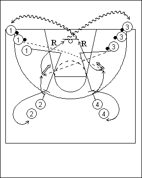

Catégorie : SHOOTS (Sh-009)
Déroulement
- Quatre files de joueurs sur un demi-terrain. Les joueurs des files se trouvant près de la baseline (1 et 3) ont un ballon, sauf le premier joueur de la file 1.
- Ce premier joueur de la file 1 feinte vers l’intérieur pour recevoir une passe du premier joueur de la file 3, puis remonte pour un up screen (écran vers le haut) en faveur du premier joueur de la file 2 qui appelle le ballon pour un jump shoot. Aussitôt après sa passe, le premier joueur de la file 3 effectue le même travail que le premier joueur de la file 1 (appel intérieur et up screen au profit du premier joueur de la file 4 qui prend le shoot). Puis up screen du deuxième joueur de la file 1, et ainsi de suite.
- Dès qu’un joueur 1 a fait un écran, il va dans la file 2; après son shoot, 2 réalise le rebond et va en dribble en 3; après le up screen, 3 va en 4; après son shoot, 4 fait le rebond et va en dribble dans la file 1.
Coaching points
- Varier les utilisations des écrans (départ vers l’intérieur ou l’extérieur); varier les types de shoots (avec ou sans feinte; avec dribble de dégagement; etc …).